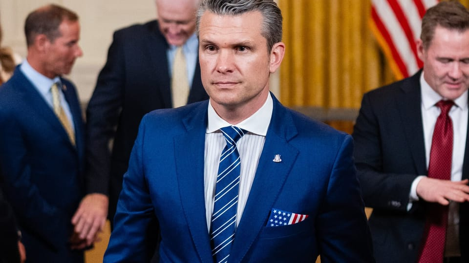

世界苦茶04月21日新闻 | 35条 | 曼谷大楼倒塌中铁高管被捕

曼谷大楼倒塌中铁高管被捕 | 共和党人支持关税有限 | 台湾大罢免导致朝野冲突 | 美国防长第二次泄露信息 | 北理工现难教授骚扰男同学丑闻
苦茶数据
美元兑人民币：7.29（昨日7.30，前日7.30）
美元兑日元：142.38（昨日142.17，前日142.38）
上证指数：3286（昨日3276，前日3266）
标普500指数：休市（昨日5282，前日5275）
比特币：87282（昨日85145，前日84989）
布伦特原油：66.79（昨日67.96，前日66.38）
中国新闻
• 李家超将访浙推动港浙合作 ：香港特首李家超将从星期二起访问浙江四天。李家超介绍，此次访问将见证浙港两地成立具体合作机制。港府新闻公报网站公布，李家超4月22日率团访问浙江，出席在杭州举行的浙港高层会晤暨浙港合作会议第一次会议和在宁波举行的投资香港推介大会——浙江专场暨甬港经济合作论坛，4月25日返港。李家超说，浙港两地一直往来频繁，在经贸、文化及青年交流保持紧密联系，在中国国家整体布局下担当着重要而独特的角色。这次访问将见证浙港两地成立具体合作机制，进一步加强双方合作，达致优势互补，互利共赢。
• 厦航波音飞机被迫退回 ：一架原计划交付给中国厦门航空的波音飞机，星期天返回抵达波音在美生产中心。路透社引述目击者报道，这架有厦门航空涂装的737 MAX飞机，于新加坡时间早上9时11分降落在西雅图波音机场。这架飞机是在波音舟山完工中心等待最后修缮和交付给 中国航司的数架737 MAX飞机之一。路透社认为，美国总统特朗普在全球发起贸易攻势之际，这架波音飞机成为以牙还牙式双边关税措施的受害者。
• 中埃空军举行联合训练 ：中国和埃及两国展开空军联合训练，星期六为首个训练日，中国派出歼击机、预警机、加油机和直升机等力量参训。中国央视军事新闻报道，4月19日上午，中埃“文明之鹰-2025”空军联合训练在埃及一座空军基地迎来首个训练日。为确保参演装备与人员高效投送，中方采取“空转+空运”混合编组模式，经过多个国家，航程近6000公里，上星期二完成全员全装进驻。此次联训是中埃两军首次组织联训。“人民空军”微信公众号星期天公布，到达埃及空军基地后，中方参训分队先后完成装备物资卸载、飞行地面准备等工作，确保联训顺利实施。
• 北理工开除性骚扰男教授 ：中国北京理工大学通报，被举报猥亵男生的男教授，已被开除中共党籍，撤销教授职称，也被解除聘用关系。北京理工大学星期天在微博通报，经调查，举报的宫姓教师宫琳师德失范行为属实，宫姓教师严重违背教师职业道德规范和行为准则，严重违反党规党纪、校规校纪。校方也说，给予宫姓教师开除党籍处分，免去行政职务，撤销其教授职称，取消研究生指导教师资格，撤销北京理工大学教师岗位任职资格，解除聘用关系。同时，报请上级教育行政部门撤销其教师资格。
• 广西遭冰雹暴雨多地受损 ：中国广西多地星期六出现强对流天气，其中广西百色部分地区遭遇狂风暴雨和冰雹袭击，部分厂房屋顶被掀翻。据中国央视新闻报道，广西百色、河池、贺州等地受短时强风、冰雹、暴雨影响比较严重，大风导致部分树木倒塌影响交通，一些民房损毁严重。广西百色部分地区当天下午遭遇狂风暴雨和冰雹袭击，在右江区江凤村沿江路段，狂风将道路两旁的树木吹倒，一些厂房的屋顶被掀翻，仓库内物品受到影响。
• 山西国道塌陷致两死 ：中国山西一条国道发生塌陷，造成四车追尾，导致两人死亡。据中国央视新闻报道，事故发生在上星期三凌晨1时40分许，地点为国道309线山西省长治市潞城区K810+530处上行线。山西省潞城公路管理段星期天发布上述通报。塌陷坑洞长2.9米、宽2.9米、深1米。路段始建于1987年，属二级公路，最近一次于2020年对路面面层进行过加铺。经专家初步调查分析，该路段由于地表水入渗和地下水渗流、潜蚀造成湿陷，路基形成空洞，导致突发性塌陷。路面塌陷及事故原因正在进一步调查。
• 五一出境游日本最热门 ：中国五一假期即将到来，旅行平台的数据显示，今年出境游火爆，其中日本热度最高。综合携程网和澎湃新闻报道，携程4月17日发布的《五一旅游出行预测报告》显示，预计五一假期境外包车订单量同比增长近25%，日本包车游更是增加60%。携程数据显示，今年五一，中国游客出境热门目的地集中在日本、香港、韩国、泰国、新加坡等传统目的地。
亚太印太新闻
• 台检调行动惹“政治偏向”争议 ：台湾检调上周发动大规模搜索约谈，锁定罢免民进党立委团体，被外界质疑“办蓝不办绿”。台湾民众党星期天表示，在野党领袖应该求同存异，主动扛起责任促进社会团结，已邀请国民党主席朱立伦与民众党主席黄国昌举办在野领袖峰会，一同把民主找回来。据联合新闻网报道，国民党不满检调侦办办案号召支持者4月26日上街头抗议司法不公，民众党主席黄国昌证实有收到邀请。民众党表示，台湾总统赖清德上任以来，全力激化台湾内部对立，制造人民仇恨、立法院激烈冲突，司法成为执政党清算政敌的工具；赖政府铲除异己雷厉风行，推动施政却一筹莫展。美国总统特朗普推动关税战，也增加台湾外在压力。
• 卢秀燕吁专注国政拼经济 ：全台大罢免愈演愈烈，台中市长卢秀燕星期天呼吁赖清德政府专心国政，让台湾更祥和更安定，不要搞政治，要拼经济。据中时电子报报道，卢秀燕星期天到台中市北部的丰原区，出席大台中佛教会所属各寺院联合浴佛法会典礼。立法院副院长江启臣、国民党籍立委杨琼璎等人也出席。对于媒体现场询问是否参与国民党4月26日在台北凯达格兰大道举行的会师活动，卢秀燕并未正面回应，但强调：“也许忠言逆耳，但是苦口婆心，希望总统赖清德与行政院长卓荣泰，此时要专心国政，团结国人，让台湾更祥和更安定，不要搞政治，要拼经济，团结人民。” （翻评：国民党民众党已经学会中共的执政方法：坏事做尽，好话说尽。可以作为我党的协力团体了。）
• 陆兆福送礼引争议公开回应 ：中国国家主席习近平访问马来西亚期间，马国交通部长陆兆福代表民主行动党赠送纪念品予习近平，却引来部分政党及网民质疑。对此，陆兆福强调，移交纪念品的安排合乎礼仪，他也痛批批评者说话未经思考。《东方日报》报道，陆兆福星期六回应说：“中国领导人没有走后门，送礼的地方不是后门，那是为了习近平的安保工作。习近平每天从酒店出来后会直接到地下室上车。而中方也同意在那边移交纪念品给他。”
• 台湾构建三链应对局势 ：面对美国总统特朗普重掌白宫后全球地缘政治、国际秩序的重新洗牌，台湾外交部长林佳龙指出，外交部将构建由“全球民主价值链”“印太第一岛链”“非红供应链”组成的台湾“三链战略”应对，同时也与美国政府紧密沟通协商，创造台美合作双赢。据《自由时报》报道，台湾立法院外交及国防委员会星期一将邀请外交部长林佳龙报告业务概况，并备质询。台外交部最新业务报告指出，当前国际社会正处于历史性的关键时刻 ，民主及以规则为基础的国际秩序皆面临空前挑战，民主世界正面临来自威权集团合流威胁。
• 台拟设港澳居留国安观察期 ：对于申请到台定居的港澳人士，台湾计划提高门槛，增设国安观察期。综合《自由时报》和台湾中央广播电台报道，台北内湖科技园区发展协会星期天举办第五届台北科技杯爱地球公益路跑活动，陆委会主委邱垂正参加，并向现场民众说明政策立场。邱垂正称，香港局势一直在改变，被北京刻意“洗人口”，未来港澳人士申请赴台居留、定居，安全查核的门槛要提高，将增设国安观察期。
• 印度居民楼倒塌致11死 ：印度新德里郊区一栋居民楼星期六倒塌，造成至少11人死亡，其中包括三名儿童。法新社报道，事故发生在新德里东北部，该地区主要居住着外来务工人员。救援队还正在废墟中寻找幸存者。据NDTV电视台报道，共有11人被宣布死亡，另有11人获救并被送往医院，目前有五人正在接受治疗。
• 曼谷大楼倒塌中铁高管被捕 ：泰国当局首次逮捕曼谷审计署大楼倒塌事故的涉案人员。中国铁路十局泰国有限公司总经理被拘留，这家公司涉嫌在泰国通过挂名股东营运及串通竞标工程合约。3月28日，缅甸中部发生强烈地震，泰国也有震感，曼谷正在建设的国家审计署大楼倒塌。据泰国媒体Khaosod English报道，泰国特别调查部警员星期六在曼谷一家酒店里逮捕了中铁十局泰国公司的总经理张传令。接受调查时，他要求提供翻译和法律代理。
科技新闻
• 全球海洋热浪激增三倍 ：一项新研究显示，全球气候变暖正显著加剧极端海洋热浪的发生频率。如今全球海洋表面每年经历极端高温的天数，已是80年前的三倍以上。海洋热浪是指海洋表面水温在一段时间内远高于正常水平的现象。英国雷丁大学科研团队近日在《美国国家科学院院刊》发表论文指出，20世纪40年代，全球海洋表面每年平均约有15天出现极端高温，如今这一数字已上升至近50天。研究还发现，近一半的海洋热浪是由全球气候变暖直接驱动的；若无气候变暖，2000年至2020年期间记录的海洋热浪中，有47%原本不会发生。
• 阿联酋政府将率先利用人工智能制定法律： 阿拉伯联合酋长国计划利用AI来协助制定新立法，审查和修订现有法律，这是该海湾国家迄今为止在推动AI应用方面最激进的一次尝试。阿联酋官媒将该这一划称之为“AI驱动的法规”。AI研究人员称，该计划比其他国家所采取的措施更进一步，但他们同时也指出计划的细节还不够明确。其他政府也在尝试利用AI提升效率，例如总结法案内容、改善公共服务提供方式等，但尚未有国家像阿联酋这样计划通过分析政府和法律数据，主动提出对现行法律的修改建议。阿联酋内阁上周批准设立一个新的内阁机构：法规智能办公室，以负责推进这项AI推动立法的计划。
• 您的礼貌可能让 OpenAI 付出高昂开销： “我很好奇OpenAI因为用户对他们的模型说‘请’和‘谢谢’而在电费上损失了多少钱。”这看似是社交媒体平台 X 上一位用户随意提出的问题，但OpenAI公司首席执行官山姆·奥尔特曼迅速回应称，输入这些礼貌用语加起来已达数千万美元，但花得很值 —— 你永远无法预料。从奥尔特曼半开玩笑的语气来看，或许可以肯定他并没有进行过精确的计算。但他的回应引发了媒体的思考，对ChatGPT等生成式AI聊天机器人保持礼貌是否真的在浪费时间和电力资源。显然，对人工智能保持礼貌不仅仅是一种不必要的习惯、错位的拟人化或对我们未来计算机霸主的恐惧。 （翻评：我就那种会对GPT说请和谢谢的人，倒不是对GPT的情感，就说说话习惯。）
财经新闻
• 台积电亚利桑那工厂将定价4nm上调 30% 以应对因关税获得的大量需求： 由于特朗普的关税迫使企业将芯片订单转移到美国，台积电在亚利桑那州的业务正在飞速增长，苹果、AMD 和 NVIDIA 等公司已向其亚利桑那工厂下达大量订单。此前认为从美国采购芯片成本高昂的科技巨头们，现在正争相向台积电亚利桑那工厂下订单，试图抵消特朗普关税对供应链的影响。而由于台积电美国公司此前并未预料到如此巨大的需求，这导致其供应链中断，并准备对“已经很昂贵”的工艺节点实施大幅提价。
• 共和党人支持关税有限耐性 ：美国总统特朗普的贸易战冲击美国经济，共和党人目前仍愿意给特朗普时间来重塑经济，并准备承受高额关税带来的更高成本，但他们表明不会无限期忍耐。美国政治新闻网站Politico对七个战场州的30多位共和党领导人和策略师等进行采访后发现，越来越多的人承认，经济冲击可能会阻碍共和党在中期选举中的表现。许多人称，他们会尽可能长时间地坚持下去，但几位州党战略师和领导人预测，选民对物价上涨的耐心最多能撑到夏天，而其他人则认为，特朗普还有约一年的时间。
• 港官赴印推广投资机会 ：香港投资推广署助理署长吴国才访问印度，与印度知名企业人士及投资者会面，宣传香港商机。综合《明报》和香港电台网站报道，吴国才星期天启程，前往孟买及新德里。这次行程的重点是探索香港营商与投资机遇研讨会，由投资推广署、香港驻新加坡经济贸易办事处及香港贸发局联合主办。吴国才将担任主题演讲嘉宾，向与会者介绍香港最新营商环境的发展，以及印度企业在港开展业务的策略优势。
• 中国国常会要求，加大逆周期调节力度稳就业、稳外贸，相关举措要“确保实施效果” ：中国总理李强周五主持召开国务院常务会议要求，面对复杂严峻的外部环境，要加力落实政府工作报告明确的政策措施，加大逆周期调节力度；着力稳就业、稳外贸，促消费、扩内需，做强国内大循环，并要求相关举措要“确保实施效果”。
• 中国一季度财政整体支出进度加快，3月非税收入增速创11个月最低 ：中国今年积极财政靠前发力在一季度财政数据中得以体现，一季度财政整体支出进度加快，支出增速创逾两年最高。财政收入虽延续负增长，但降幅有所收窄。3月单月来看，一般财政收入同比转为正增，不过，其中非税收入增速创下11个月低点，土地出让收入同比降幅亦有所扩大。
• 中国4月LPR料仍持稳，银行净息差压力不减且政策利率未动 ：中国央行周一将发布4月贷款市场报价利率。路透调查显示，银行净息差压力不减，且一季度经济数据偏暖，加之LPR锚定的政策利率--七天逆回购操作利率持稳，约87%的受访人士预计4月LPR将连续第六个月维持不变。
• 日本首相称在与美国讨论汇率问题时将强调“公平”，或增购美国能源 ：在美日贸易协商吸引全球注意力之际，日本首相石破茂周日表示，日本将在与美国就汇率问题进行的任何讨论中强调“公平”。石破茂在公共广播公司NHK电视节目中表示，日本可以购买更多美国能源，针对美国对日本汽车市场非关税壁垒的指控要展现灵活性。
• 韩国称韩美将于本周举行贸易谈判 ：韩国产业通商资源部周日表示，应美方建议，韩国和美国将于本周在华盛顿举行贸易磋商。该部在一份声明中称，韩国企划财政部长官崔相穆和产业通商资源部长官安德根将在国际货币基金组织和世界银行春季会议期间与美国贸易代表格里尔和财长贝森特会面。
• 特朗普正在研究是否解雇美联储主席鲍威尔 ：美国国家经济委员会主任哈西特表示，特朗普总统及其团队正在继续研究是否可以解雇美联储主席鲍威尔。此类举动对美联储独立性和全球市场具有重大影响。"总统和他的团队将继续研究此事，"哈西特在白宫说，当时有记者问及"解雇鲍威尔是否是一个选项"。 （翻评：如果特朗普解雇鲍威尔，他就应该被马上弹劾。只要这样做，基本美国的国家信用和长期经济稳定性就丧失了。）
俄乌战争
• 俄乌互控对方破坏复活节停火提议，停火无延长迹象 ：俄罗斯和乌克兰周日相互指责对方破坏俄罗斯总统普京宣布的复活节停火，双方都指责对方发动了数以百次的攻击。克里姆林宫表示，普京没有下达延长停火的命令。乌克兰总统泽连斯基称，俄罗斯假装遵守复活节停火，但在周六晚上发动了数百次炮击，周日又发动更多炮击。美国总统特朗普周日仍表示乐观，称希望双方能在本周达成协议结束冲突。此前特朗普和美国国务卿鲁比奥表示，除非很快出现取得进展的明确迹象，否则美国将放弃促成俄乌和平协议的努力。
• 欧盟考虑剥夺匈牙利因乌克兰阻挠而获得的投票权： 据《卫报》报道，由于匈牙利不断试图阻止欧盟对乌克兰的支持，欧盟成员国正考虑剥夺其投票权。这一潜在行动正值亲俄总理维克托·欧尔班面临反对派领导人彼得·马扎尔多年来最严峻的政治挑战之际。《卫报》称，匈牙利各地出现了“让我们不要让他们替我们做决定”的海报，并将乌克兰总统弗拉基米尔·泽连斯基、欧盟委员会主席乌尔苏拉·冯德莱恩和欧洲人民党领导人曼弗雷德·韦伯描绘成匈牙利政府宣传中的反派人物。这场活动以一场全民公投为中心，向公民询问：“你是否支持乌克兰加入欧盟？” 发起这项活动后，欧尔班总理敦促公民投票反对加入欧盟，声称“否则我们将不得不把匈牙利所有的钱都花在乌克兰身上。”政府还毫无根据地声称，来自乌克兰的“廉价劳动力”将抢走匈牙利的工作岗位，而且由于乌克兰人的疫苗接种率不足，疫情将蔓延。 （翻评：请早点把这个搞定吧！已经说了很久了！）
其他新闻
• 美多地示威反对特朗普政策 ：数千名抗议者星期六在华盛顿和美国其他城市集会，反对特朗普的驱逐出境、解雇政府雇员以及加沙和乌克兰战争等政策。路透社报道，媒体镜头显示，在白宫外，抗议者举着写有“工人应该拥有权力”、“不要王权”、“停止武装以色列”和“正当程序”的横幅。一些示威者高呼口号，声援特朗普政府已驱逐出境或试图驱逐的移民，同时声援被联邦政府解雇的人，以及资金受到特朗普威胁的大学。
• 美伊第二轮核会谈取得进展，未来一周将再次举行会谈 ：美国和伊朗谈判代表举行会谈后，伊朗外交部长表示，双方周六同意开始起草潜在核协议框架。此前一位美国官员称会谈取得了“非常好的进展”。会谈结束后，伊朗外长阿拉格齐在国家电视台发表讲话，称这次接触是有益的，整体氛围具有建设性。 特朗普政府一位官员证实，双方同意未来一周再次会晤。
• 以军误杀救援人员免职 ：以色列军方承认在报告致加沙15名医护和救援人员死亡事件时存在失职，决定免去涉事指挥官的职务。以军士兵3月底在加沙南部拉法对医疗和急救车队发动袭击，造成15名医务人员和人道工作者丧生。他们遇难一周后，联合国和巴勒斯坦红新月会官员在一处浅坟中发现他们的遗体。综合法新社和路透社报道，以军星期天发布声明，公布这起事件的调查结论，声称部队并未进行无差别射击。“部队并未实施无差别涉及，但始终保持警惕，以应对他们识别出的真实威胁。调查未发现任何支持处决指控的证据。”
• 英战机波罗的海拦俄机 ：英国战机本周两次在波罗的海上空靠近北约领空的地方，拦截了俄罗斯飞机。英国国防部星期天发声明说，英国空军的“台风”战斗机，星期二紧急升空，拦截了一架俄罗斯的伊留申Il-20M侦察机。两天后，英军的两架“台风”战斗机拦截了一架离开俄罗斯飞地加里宁格勒空域的不明飞机。
• 特朗普拟大幅裁撤非洲使馆 ：美国总统特朗普计划取消国务院在非洲的大部分运作，包括关闭大多数使领馆。彭博社引述《纽约时报》报道，特朗普可能在本周签署的一份行政命令草案，要求关闭美国在非洲各地的大使馆和领事馆，停止美国在非洲的几乎所有运作。美国政府将以一个规模小得多的非洲事务特使办公室，取代负责撒哈拉以南非洲政策的国务院非洲事务局。非洲事务特使办公室将直接里属于白宫国家安全委员会，专注于少数几个问题，包括协调反恐行动。
• 尼泊尔机场腐败调查曝光 ：尼泊尔政府对博卡拉的新国际机场的调查发现，官员和立法者的“违规和腐败”导致该项目的中国国有承包商无视其义务，并收取从未完工的费用。《纽约时报》报道，由11名成员组成的议会委员会星期四发布的一份长达36页的报告显示，对博卡拉国际机场的调查发现，中国机械工业集团旗下的中工国际未能缴纳税款，未能按规范完成项目，并且使用了劣质建筑材料，所有这些都是由于腐败和缺乏监督造成的。知名旅游胜地博卡拉是尼泊尔第二大城市。博卡拉国际机场由中国进出口银行提供20年期贷款建造，但其国际旅客吞吐量远低于预期。中国将博卡拉机场誉为“一带一路”倡议的旗舰项目。
• 美防长被指在又一个Signal群聊分享军事信息： 据三位知情人士透露，美国国防部长皮特·赫格塞斯在第二个Signal群聊中分享了针对也门胡塞武装的军事行动详细计划。该群聊的参与者包括他的妻子、律师和兄弟。第二次 Signal 聊天是赫格塞斯上个月与内阁官员沟通军事计划时使用的聊天的后续，该聊天目前正受到国防部代理监察长的调查。这次聊天是在上次事件的确认听证会期间设立的，旨在为赫格塞斯最亲密的盟友制定战略，但他在被被确认后仍继续使用个人手机上的聊天功能与他们沟通。 （翻评：草台到毫不在意的地步。）